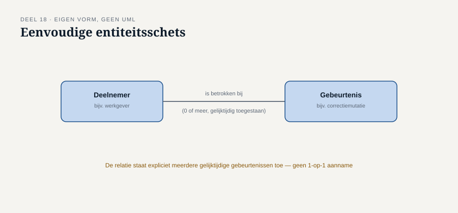
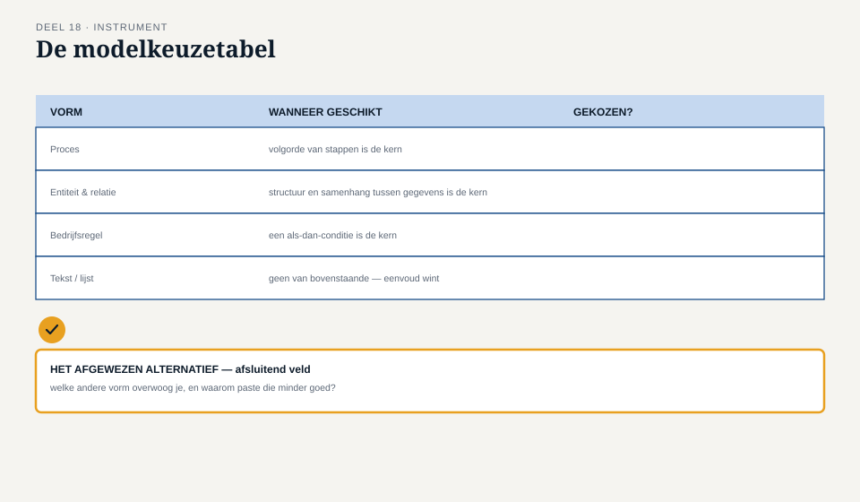

Deel 18 — Specificeren en modelleren: proces, data, regels, user stories
Slidedeck · Ductus-cursus Business-analyse · niveau 2 · deel 18 van 30 · 24 slides
Slide 1 — Titel
Business-analyse — deel 18 Specificeren en modelleren: proces, data, regels, user stories
Slide 2 — Terugblik
Requirements opgehaald, getraceerd, geprioriteerd.
Vandaag: in welke vorm leg je ze uiteindelijk vast?
Slide 3 — Femkes twijfel
“Ik kan dit als proces tekenen. Maar het voelt ook als een regel. En eigenlijk ook als een gegevensvraagstuk.”
“Misschien is het antwoord: alle drie, ieder voor het deel waar het goed in is.”
Slide 4 — Waar we het over gaan hebben
- Vier vormen: proces, regel, data, gebruikersverhaal
- Kiezen is ook verliezen
- De modelkeuzetabel
Slide 5 — Proces
Een volgorde van stappen, met vertakkingen.
Geschikt: wat gebeurt wanneer, in welke volgorde.
Slide 6 —

Een eenvoudige processchets met een beslispunt
↗ Volwaardige procesmodellering: de BPMN/CMMN/DMN-cursus
Slide 7 — Bedrijfsregel
Condities en uitkomsten.
Geschikt: welke uitkomst hoort bij welke combinatie.
Slide 8 — Een eenvoudige beslistabel
| Uitdiensttreding | Overlijden | Regel |
|---|---|---|
| Ja | Nee | Standaardproces |
| Nee | Ja | Standaardproces overlijden |
| Ja | Ja, zelfde maand | Uitzondering: overlijden heeft voorrang |
↗ DMN-module, BPMN/CMMN/DMN-cursus
Slide 9 — Gegevensstructuur
Welke gegevens bestaan, en hoe verhouden ze zich.
Geschikt: wat je moet kunnen vastleggen.
Slide 10 —

Entiteitsschets — deelnemer, gebeurtenis, relatie
↗ Volwaardige datamodellering: de datacursus
Slide 11 — Gebruikersverhaal
“Als [rol] wil ik [doel], zodat [waarde].”
Geschikt: het doel van een gebruiker, nog open voor verfijning.
Slide 12 — [Opdracht 1]
Drie requirements. Welke vorm past het beste bij elk?
Slide 13 — Kiezen is ook verliezen
Dezelfde discipline als het optieblad — nu op modelvormen.
Slide 14 — Wat elke keuze kost
Proces: verlies aan combinatorische scherpte Regel: verlies aan zicht op volgorde en timing Data alleen: verlies aan gedrag Verhaal alleen: verlies aan precisie
Slide 15 — [Opdracht 3]
Kies bewust een andere vorm voor R-021. Wat verlies je concreet?
Slide 16 — Femkes intuïtie was correct
Samenloop raakt alle drie: volgorde, combinatielogica, structuur.
Een goede specificatie erkent dat.
Slide 17 — De werkvorm van dit deel
De modelkeuzetabel
Kernvraag → gekozen vorm(en) → wat wordt opgegeven
Slide 18 — Het blad
Requirement · Kernvraag · Gekozen vorm(en) Wat wordt opgegeven · Kruisverwijzing
Slide 19 — Het veld dat het verschil maakt
Welk model kies je NIET, en wat zou je daarmee verliezen?
Slide 20 — Waarom dit ertoe doet
Voorkomt dat een analist een vorm kiest omdat die toevallig het meest vertrouwd aanvoelt.
Slide 21 —

De modelkeuzetabel — met het afgewezen alternatief als afsluitend veld
Slide 22 — [Opdracht 4]
Een nieuw samenloopscenario. Dezelfde combinatie van vormen, of een andere?
Slide 23 — Genoeg voor het gesprek, niet om te bouwen
Op dit niveau: kiezen en schetsen.
Voor de volwaardige uitwerking: de zustercursussen.
Slide 24 — Volgende keer
De vorm staat. Maar vorm is niet hetzelfde als kwaliteit.
Deel 19: verifiëren en valideren — het deel waar de meeste BA’s in de praktijk op vastlopen. Twee dagdelen.